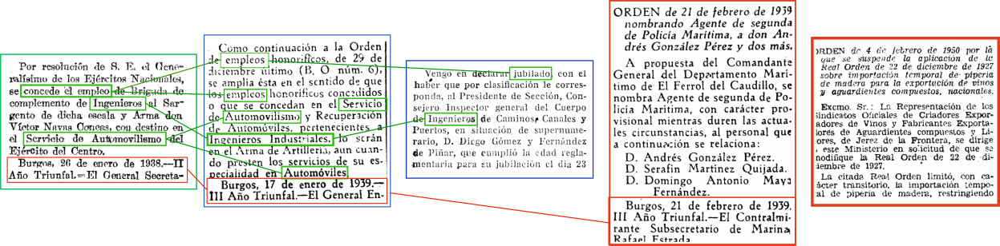

Heritage Management
I have a thing for heritage anagement and digital humanities...If you want to further read about it...
Explore the Heritage Projector repository on GitHub: EauDeData/cvc-dataset-projector
And an overview of some applications: XPP Portal
Research
My main contributions to SCIENCE!Find in this section my work around document understanding and information retrieval on historical sources.

Recommended Lectures
Task Arithmetic in the Tangent Space: Improved Editing of Pre-Trained Models
Task arithmetic has recently emerged as a cost-effective and scalable approach to edit pre-trained models directly in weight space: By adding the fine-tuned weights of different tasks, the model's performance can be improved on these tasks, while negating them leads to task forgetting. Yet, our understanding of the effectiveness of task arithmetic and its underlying principles remains limited. We present a comprehensive study of task arithmetic in vision-language models and show that weight disentanglement is the crucial factor that makes it effective. This property arises during pre-training and manifests when distinct directions in weight space govern separate, localized regions in function space associated with the tasks. Notably, we show that fine-tuning models in their tangent space by linearizing them amplifies weight disentanglement. This leads to substantial performance improvements across multiple task arithmetic benchmarks and diverse models. Building on these findings, we provide theoretical and empirical analyses of the neural tangent kernel (NTK) of these models and establish a compelling link between task arithmetic and the spatial localization of the NTK eigenfunctions. Overall, our work uncovers novel insights into the fundamental mechanisms of task arithmetic and offers a more reliable and effective approach to edit pre-trained models through the NTK linearization.
How to Turn Your Knowledge Graph Embeddings into Generative Models
Some of the most successful knowledge graph embedding (KGE) models for link prediction -- CP, RESCAL, TuckER, ComplEx -- can be interpreted as energy-based models. Under this perspective they are not amenable for exact maximum-likelihood estimation (MLE), sampling and struggle to integrate logical constraints. This work re-interprets the score functions of these KGEs as circuits -- constrained computational graphs allowing efficient marginalisation. Then, we design two recipes to obtain efficient generative circuit models by either restricting their activations to be non-negative or squaring their outputs. Our interpretation comes with little or no loss of performance for link prediction, while the circuits framework unlocks exact learning by MLE, efficient sampling of new triples, and guarantee that logical constraints are satisfied by design. Furthermore, our models scale more gracefully than the original KGEs on graphs with millions of entities.
Relational Proxies: Emergent Relationships as Fine-Grained Discriminators
Fine-grained categories that largely share the same set of parts cannot be discriminated based on part information alone, as they mostly differ in the way the local parts relate to the overall global structure of the object. We propose Relational Proxies, a novel approach that leverages the relational information between the global and local views of an object for encoding its semantic label. Starting with a rigorous formalization of the notion of distinguishability between fine-grained categories, we prove the necessary and sufficient conditions that a model must satisfy in order to learn the underlying decision boundaries in the fine-grained setting. We design Relational Proxies based on our theoretical findings and evaluate it on seven challenging fine-grained benchmark datasets and achieve state-of-the-art results on all of them, surpassing the performance of all existing works with a margin exceeding 4% in some cases. We also experimentally validate our theory on fine-grained distinguishability and obtain consistent results across multiple benchmarks.
Papers and Community
Explore the citations graph of my main interests in research. Or don't do it, could not care less.
Explore the interests graph: Retina Graph
Explore the colaborations and papers we have done at my research group! (just pretend it wasn't last updated 100 years ago)
Explore the DAG graph: Retina Graph